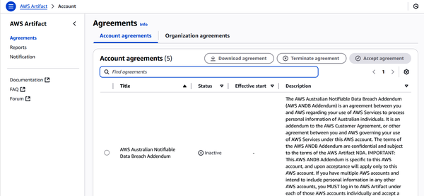

When you’re running workloads in AWS, it’s easy to blur the lines between compliance, governance, and security. They’re tightly linked, but each plays a distinct role in keeping your cloud environment secure, well-managed, and in line with regulations. Understanding how they differ—and how they work together—goes a long way toward building systems that are both efficient and trustworthy.
In this chapter, we’ll take a look at compliance, along with governance. We’ll begin coverage of the topic of security in the next chapter by looking at the AWS IAM service. Keep in mind that compliance is more emphasized in the exam. So, our coverage of governance will be fairly brief. For this topic, you will need to understand a couple of tools like AWS Organizations and AWS Config.
Let’s first look at the differences between compliance, governance, and security.
Compliance is about playing by the rules. Whether those rules come from laws, industry standards, or your own internal policies, compliance means making sure your systems and data handling practices follow them.
In the AWS ecosystem, compliance typically centers on protecting customer data, managing risk, and providing accountability. AWS helps with this by providing infrastructure that’s built to meet recognized security standards. Their Compliance program covers a wide range of frameworks.
By aligning with these standards, AWS makes it easier for organizations to meet their own compliance requirements, no matter the industry or geography.
It’s also important to keep in mind that theAWS Shared Responsibility Model applies to compliance duties. AWS ensures that the cloud infrastructure meets industry standards, while customers are responsible for configuring services like encryption and IAM policies to comply with regulations like the US’s Health Insurance Portability and Accountability Act (HIPAA) and the EU’s General Data Protection Regulation (GDPR).
If compliance is about following rules, governance is about creating and enforcing them. It’s the broader framework that keeps your cloud operations aligned with business goals and risk tolerance.
In practice, governance involves setting policies, defining roles, and putting the right processes in place to make sure your AWS resources are used responsibly. This includes managing access, enforcing security standards, and ensuring that teams follow best practices across the board.
Good governance is also a powerful way to keep cloud costs in check. With tools like AWS Budgets and service control policies (SCPs), you can set spending limits, flag usage overages, and restrict unnecessary resource usage. This can help make sure your cloud investments stay aligned with your organization’s goals.
AWS offers several tools to support this effort. Services like AWS Organizations, AWS Control Tower, and AWS Config help you manage multiple accounts, apply consistent policies, and monitor changes over time. With the right setup, governance becomes less about policing behavior and more about enabling teams to work safely at scale.
Security is about protection. It’s the set of technical and procedural safeguards that defend your data, systems, and workloads from threats—both external and internal.
AWS offers tools like IAM (Identity and Access Management), KMS (Key Management Service), and AWS Shield (a managed distributed denial of service protection service). These services help you control who can access what, encrypt sensitive data, and protect against attacks. Security is covered in detail in Chapter 7.
When used together—and used well—compliance, governance, and security don’t just keep you out of trouble. They create a strong foundation for operating confidently in the cloud.
When it comes to compliance, AWS helps organizations meet a wide range of industry, national, and international requirements. These requirements may come in the form of standards (like PCI DSS), programs (like FedRAMP), regulations (like HIPAA), or audit reports (like SOC 1 and 2). In this section, we’ll walk through them—and clarify how AWS helps you align with each.
Note that AWS doesn’t create these programs. Instead, it offers services and documentation that help you meet their requirements—whether by providing audit reports, offering compliant infrastructure, or listing authorized services.
The Payment Card Industry Data Security Standard (PCI DSS) sets strict guidelines for processing, storing, and transmitting credit card data. AWS offers a PCI-compliant environment for services that handle payment information. If your application touches cardholder data, you’ll need to make sure both your architecture and operational practices meet PCI requirements.
The International Organization for Standardization (ISO) sets globally recognized standards for information security, risk management, and quality assurance. AWS maintains compliance with key ISO certifications, some originally published jointly with the International Electrotechnical Commission (IEC). These include ISO/IEC 27001 (information security management), ISO/IEC 27017 (cloud-specific security controls), and ISO/IEC 27018 (protection of personal data in the cloud). These certifications demonstrate that AWS’s security and privacy practices meet rigorous international benchmarks.
The US National Institute of Standards and Technology (NIST) provides widely adopted standards for cybersecurity, including NIST 800-53, an information security standard, and the NIST Cybersecurity Framework (CSF), as well as requirements like NIST Special Publication (SP) 800-171 for protecting Controlled Unclassified Information (CUI) for nonfederal systems. (CUI is a category of information determined by the US federal government.) AWS aligns many of its services and controls with NIST guidelines, making it easier for US federal agencies and other organizations to meet their security objectives.
The Federal Risk and Authorization Management Program (FedRAMP) is a US government program that standardizes security assessment and authorization for cloud services used by federal agencies. AWS offers a catalog of services that have received FedRAMP authorization, meaning they’ve been reviewed and approved under the program’s strict security standards.
However, not all AWS services are FedRAMP-authorized, and authorizations can differ based on the Region or deployment model. AWS GovCloud (US) divides the US into an eastern and a western region and offers compliance guidance. Standard regions, like the Northeast, the Southwest, etc., may also be used as a deployment model, and different authorizations might apply. That’s why, if you’re working with government data, it’s essential to confirm that the specific AWS services you plan to use are on the list of FedRAMP-authorized offerings. You can do this through AWS Artifact or the official FedRAMP Marketplace.
FINMA, the Swiss Financial Market Supervisory Authority, governs financial institutions operating in Switzerland. AWS supports compliance with FINMA requirements through specific documentation, risk transparency, and audit support tailored to financial firms. If you’re operating in Swiss finance, you’ll need to map AWS services to FINMA’s outsourcing and risk control guidelines to stay compliant.
The US’s Health Insurance Portability and Accountability Act (HIPAA) mandates strict protections for handling protected health information (PHI). AWS enables HIPAA compliance through services covered under a Business Associate Addendum (BAA). Once you sign a BAA with AWS, you’re cleared to build HIPAA-compliant applications using supported services. But it’s still up to you to configure those services correctly and implement proper access controls and encryption.
The EU’s General Data Protection Regulation (GDPR) governs data protection and privacy for individuals in the European Union. It requires strict safeguards for how organizations collect, store, and process personal data. AWS supports GDPR compliance through its Data Processing Addendum (DPA), which is available via AWS Artifact, and provides a wide range of services with built-in privacy and security features such as encryption, access controls, and logging. Still, customers remain responsible for implementing appropriate safeguards in their own applications and ensuring that data subject rights—such as access and erasure—are upheld.
SOC (System and Organization Controls) reports are designed to assess how well a service provider manages and protects data. These reports were developed by the American Institute of Certified Public Accountants (AICPA). They are intended to verify that an organization working with data has appropriate internal controls in place. The reports are categorized into types: SOC 1 focuses on financial reporting controls, while SOC 2 evaluates broader operational criteria like security, availability, and confidentiality. These reports are especially important for organizations that need to demonstrate trustworthiness to customers and partners. AWS provides SOC reports so that you can understand the security controls in place.
In Table 5-1, you’ll see a comparison of these frameworks.
| Framework | Primary focus |
|---|---|
|
PCI DSS |
Secure handling of credit card data (processing, storing, transmitting) |
|
ISO |
International security and risk management standards (e.g., ISO/IEC 27001, 27017, 27018) |
|
NIST |
US cybersecurity standards (e.g., NIST 800-53, CSF) |
|
FedRAMP |
US federal government security standards for cloud services |
|
FINMA |
Swiss financial regulatory compliance |
|
HIPAA |
Safeguards for protected health information |
|
GDPR |
Data protection and privacy for EU residents |
|
SOC 1 |
Controls over financial reporting |
|
SOC 2 |
Controls for security, availability, confidentiality |
Note that not all AWS Regions support every compliance framework. Always check the AWS Services in Scope by Compliance Program before architecting a workload with regulatory requirements.
When you’re building in the cloud, it’s easy to assume that meeting one compliance framework means you’re covered across the board. Unfortunately, that’s not the case. Being compliant with SOC 2 requirements, for example, doesn’t mean you’re automatically compliant with HIPAA, PCI DSS, or any other regulatory standard. Each framework has its own rules, requirements, and expectations.
Another common misconception: just because a service is available in an AWS Region doesn’t mean it meets every compliance requirement there. AWS makes a wide range of services globally available, but it’s up to you to verify which ones are approved for the specific frameworks your organization needs to follow.
Moreover, don’t treat compliance like a checklist. Each framework demands its own set of controls, configurations, and documentation. AWS gives you a powerful toolkit and a foundation for compliance, but staying on top of it is an active, ongoing effort.
We’ll shift our focus to the AWS-native tools that help you put compliance practices into action. They help you monitor, enforce, and report on how well your AWS environment is meeting the rules, whether they’re driven by external regulations or your organization’s internal policies.
Some of these tools help with risk detection and remediation (like Amazon Inspector), others assist with tracking configuration drift or enforcing organizational policies (like AWS Config or Control Tower), and some streamline audit preparation (like AWS Audit Manager).
In Chapter 2, tools like Amazon CloudWatch and AWS CloudTrail are covered. Now let’s explore several additional services that are especially useful for managing compliance.
Amazon Inspector is a security scanner for your EC2 instances and workloads. It automatically checks for vulnerabilities, such as outdated software, open ports, or misconfigured networks. It flags issues that could create risk or break compliance rules so you can fix them fast.
AWS Config keeps track of your cloud environment’s configuration over time. It records changes, evaluates them against rules you set, and helps ensure that resources stay compliant. If something drifts out of line, you’ll know right away and you can automate responses if needed.
Trusted Advisor acts like a virtual consultant. It reviews your AWS environment and offers recommendations to improve security, reduce costs, and boost performance. While it doesn’t enforce changes, it gives valuable insights you can use to stay on track with best practices, including compliance.
AWS Audit Manager helps you simplify the process of preparing for audits by automating evidence collection. It maps AWS resource activity to control requirements from frameworks like PCI DSS, HIPAA, and SOC 2. Audit Manager also integrates with services like AWS Config and CloudTrail to collect evidence automatically, which shows how it streamlines compliance workflows.
AWS Organizations helps you manage multiple AWS accounts from a central location. This makes it easier to organize your environment, apply governance policies, and streamline operations. You can group accounts into organizational units (OUs), set up new ones quickly, and use SCP to enforce permissions and establish guardrails across accounts. This not only simplifies security and compliance but also consolidates billing. Plus, it integrates with other AWS services. This lets you manage configurations, share resources, and push security policies organization-wide without jumping through hoops.
For example, you can use SCPs to block developers in a sandbox account from accidentally spinning up expensive GPU instances. Similarly, tagging policies can enforce consistent cost allocation across departments—such as requiring a CostCenter or Project tag on every resource—so that finance teams can accurately track and charge back cloud spend.
AWS Control Tower automates the setup of a secure, well-governed multiaccount AWS environment by creating a landing zone built on AWS best practices. It applies specific guardrails to enforce governance and compliance, including preventive guardrails (for example, restricting root user actions) and detective guardrails (such as monitoring for noncompliant resources). Control Tower integrates with tools like AWS Organizations, IAM Identity Center, and AWS Service Catalog to handle provisioning, access, and resource management at scale.
AWS License Manager helps you keep software licensing under control, whether you’re running workloads in AWS, on-premises, or both. It supports major vendors like Microsoft, SAP, and Oracle, letting you define rules, track usage, and enforce policies to avoid overuse or violations. The service gives you visibility into license consumption across accounts, automates compliance checks, and reduces the chances of audit surprises or unplanned costs.
AWS Security Hub provides a single dashboard that aggregates security findings from multiple AWS services like Inspector, GuardDuty, and Config, as well as supported third-party tools. It continuously checks your environment against compliance frameworks such as the Center for Internet Security (CIS) Benchmarks, PCI DSS, and NIST CSF. (AWS provides a set of security configuration practices to align with the CIS Benchmarks program, called the CIS AWS Foundations Benchmarks.) This helps you maintain a real-time compliance posture without having to manually stitch together data from different sources.
AWS Budgets lets you set custom cost and usage limits for your AWS environment and get alerts when you approach or exceed them. While it’s primarily a financial governance tool, it also supports compliance objectives by enforcing accountability for spending policies, reducing the risk of “shadow IT” (IT systems deployed with the aim of bypassing limitations or restrictions) or uncontrolled resource growth. For example, you can tie budget alerts to automated actions—like restricting new resource launches in noncompliant accounts—helping ensure that financial policies and operational guardrails go hand in hand.
In Table 5-2, you’ll find a comparison of the AWS tools for compliance.
When audits or legal reviews roll around, you’ll need documentation. AWS provides a set of tools and resources that make it easy to access the compliance materials you need without waiting on support tickets or chasing down PDFs.
AWS Artifact is a repository of compliance reports and agreements. It offers instant access to third-party audit reports—like SOC, PCI DSS, and ISO certifications—as well as legal documents like HIPAA Business Associate Agreements. Everything’s organized in one place and tied to your AWS account, so you can pull what you need, when you need it.
Here’s how to use AWS Artifact:
Log in to AWS.
Go to the search box on the top left and enter “ASW Artifact.”
Select it.
You have two options: View reports and View agreements.
Select the second one.
Figure 5-1 shows a list of the agreements.

At the top of the screen, you can select the agreements for your AWS account or organization.
Select the first agreement.
You can then download it as well as accept the agreement. You will also likely need to agree to a nondisclosure agreement.
Once you accept an agreement, it’s logged as part of your account’s compliance records and stays available for reference whenever you need it. This comes in handy during audits or when working in regulated industries. Just note that some agreements are required based on the services you’re using.
If you’re looking for guidance on navigating compliance in the cloud, the AWS Compliance Center is worth bookmarking. It includes whitepapers, FAQs, auditing checklists, and customer case studies from regulated industries. You’ll also find resources tailored for legal teams, auditors, and compliance pros who need to understand how AWS fits into their regulatory picture.
Compliance keeps your workloads in line with regulatory and internal standards, while governance provides the structure—policies, roles, and oversight—that guides how cloud resources are used. We covered key frameworks like HIPAA, PCI DSS, and FedRAMP, and walked through AWS tools that support compliance, including Config, Audit Manager, License Manager, and Artifact.
Up next, we’ll look at identity management in AWS.
To check your answers, please refer to the “Chapter 5 Answer Key”.
What is the primary purpose of governance in AWS?
Encrypting data in transit
Monitoring security events
Preventing distributed denial-of-service (DDoS) attacks
Defining and enforcing policies to guide cloud operations
Which compliance framework is focused on the US federal government cloud service standards?
Health Insurance Portability and Accountability Act (HIPAA)
Federal Risk and Authorization Management Program (FedRAMP)
Payment Card Industry Data Security Standard (PCI DSS)
Swiss Financial Market Supervisory Authority (FINMA)
What tool continuously tracks and evaluates AWS resource configurations?
AWS Artifact
AWS Config
Amazon GuardDuty
AWS Shield
Which service helps scan Elastic Compute Cloud (EC2) instances for misconfigurations or vulnerabilities?
AWS Shield
AWS CloudTrail
Amazon Inspector
AWS Config
What is the purpose of service control policies (SCPs) in AWS Organizations?
To restrict access to AWS services across accounts
To scan for DDoS attacks
To store audit logs
To generate compliance documentation